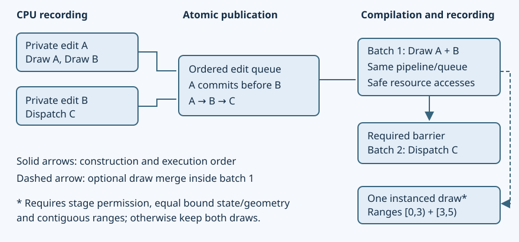

Batched operation authoring
What this guide covers
Record large collections with typed argument arrays, submit independent edits from worker threads, inspect compiler pipeline batches, and enable safe automatic draw instancing. The node schema and shader/CUDA resource contract remain the same for scalar and array invocation.
Prerequisites and the execution model
Start with node registration, resource declarations and dependency compilation. An authored operation describes work; a pipeline describes how the GPU performs it; bindings select the data for that work. Sharing a pipeline permits command recording to be grouped without requiring identical bindings.
A batch moves transition boundaries around several operations, so the compiler must prove that no required transition or visibility barrier disappears. Instancing removes draw boundaries too: it needs matching geometry and a promise that shader instance addressing and setup hooks tolerate the merge. CPU edit recording is independent of these GPU scheduling decisions.

Arrays zip; scalars broadcast
TArdaNodeArray<T> is an owning wrapper for repeated node arguments. Any positional parameter slot may receive an array of its normal value type. All arrays in one call must have the same length. Scalar values repeat for every lane; arrays zip by index. This does not form a Cartesian product. The node's existing parameter constructors still determine argument order, default fields, type conversions and narrowing errors.
TArdaNodeArray<FArdaGraphBuffer> Buffers{FirstBuffer, SecondBuffer};
TArdaNodeArray<uint32_t> FillValues{7, 11};
auto DistinctValues = FillDemoBuffer(Edit, Buffers, FillValues);
auto SameValue = FillDemoBuffer(Edit, Buffers, uint32_t{19});
// Complete parameter snapshots are also accepted.
TArdaNodeArray<FArdaDemoFillParameters> Parameters{
{FirstBuffer, 7}, {SecondBuffer, 11}};
auto Structured = FArdaDemoFillNode::Invoke(Edit, Parameters);FillDemoBuffer is the callable defined in the node registration example. The same overloads work through a named global callable, Node::Invoke, or Edit.Invoke<Node>. Ordinary eastl::vector values and fixed shader binding arrays remain one node parameter. Wrap them in TArdaNodeArray only when they should represent repeated operations.
Empty arrays produce empty results without attaching operations. Pairing an empty array with a nonempty array is a length mismatch. Mismatches fail before any lane is attached. A later per-lane validation failure retains the first edit error; no part of that failed edit can be committed. Recover with Cancel() or scope destruction. Scalar broadcasts must be reusable values; move-only objects cannot be broadcast to multiple lanes. Parameter values are copied into immutable node snapshots, while nested shared pointees retain the normal node ownership contract.
Array calls return arrays of the usual result type. Executable nodes return TArdaNodeArray<FArdaGraphOperation>; its GetBuffer, GetTexture and GetAccelerationStructure methods retrieve one output per lane. Retrieve outputs before closing the edit. Graphics and ray provider stages return arrays of their typed stage values, ready for the next vectorized call.
TArdaNodeArray<eastl::vector<uint8_t>> Bytes{
{1, 2, 3, 4}, {5, 6, 7, 8}};
auto Uploaded = UploadBuffer(Edit, FArdaDependencyResourceHandle{}, Bytes).GetBuffer();
auto Copies = CopyBuffer(Edit, Uploaded, FArdaDependencyResourceHandle{}).GetBuffer();
for (auto Buffer : Copies) Edit.Keep(Buffer);Array normalization creates distinct logical lane nodes and shared invocation-family metadata during authoring. It does not create a native multi-draw command by itself. Compilation validates and assembles each lane, resolves its dependencies and then batches compatible executable work. This preserves independent outputs, error reporting and resource access deductions for every lane.
A large GBuffer construction
The following sketch assumes application-defined MeshVS and GBufferPS nodes with the indicated parameter order. Upload or import geometry/material data first; allocate and initialize the shared GBuffer once before recording draws.
// Each array contains one entry per mesh. View and targets broadcast.
auto Vertices = MeshVS(Edit, VertexBuffers, IndexBuffers, Objects, View);
auto Fragments = Rasterize(Edit, Vertices, RasterConfig);
auto Pixels = GBufferPS(Edit, Fragments, Materials, RGB, Normal, Depth);
Edit.Keep(RGB);
Edit.Keep(Normal);
Edit.Keep(Depth);
if (auto Status = Edit.Commit(); !Status) return Status;
if (auto Status = Graph.CompileAndWait(); !Status) return Status;
return Graph.ExecuteAndWait().mStatus;Rasterize(Edit, Vertices, Viewport, RasterState, ...) also accepts array-valued configuration slots. The input arrays and every varying configuration array must have equal lengths. Shared attachment hazards preserve the requested draw order. Declare load-and-preserve attachments as ReadWrite, initialize them before use, and keep clear operations outside repeated draw hooks.
For 100,000 meshes this may still author roughly 300,000 stage operations. Pipeline batching reduces native recording/submission overhead, and eligible instance merging can reduce draw count. Different geometry or per-draw binding sets normally still require separate draw commands. This backend does not generate scene culling, material tables, vertex pulling or GPU-driven indirect argument lists from an arbitrary array.
Compiler rule: batch compatible pipelines
FArdaBatchPipelinesRule runs after queue assignment and CUDA batch construction. It partitions executable work into FArdaInductorCompileResult::mPipelineBatches, preserving the selected execution order. Adjacent native operations with the same inferred pipeline configurations and assigned queue may share one native command-list recording even when their resource bindings differ. The key includes the shaders and fixed pipeline configuration, pipeline slots, and relevant render-target formats/sample counts. Resource bindings are supplied separately for each operation.
The rule covers traditional graphics, meshlet, compute, ray-tracing and work-graph pipeline requests. CUDA operations use their existing ordered mCudaBatches as shared sequence batches, because CUDA work does not have a graphics PSO. Commands with no identifiable native pipeline remain separate native batches. An array is not required: ordinary scalar calls receive the same optimization.
Queue changes, incompatible pipelines, physical alias activations, conflicting state transitions, overlapping writable non-attachment resources, and acceleration-structure build/write boundaries prevent unsafe native grouping. Consecutive render-target/depth writes can remain in an ordered batch. Custom rules may safely split a compatible batch or omit/split instancing candidate groups; final validation rejects groups that cross required boundaries. The rule does not reorder operations to bring matching pipelines together; dependency scheduling remains responsible for legal execution order. A shared command list may still change binding sets or framebuffer state and contain many dispatches or draws.
| Optimization | What becomes shared | What can remain separate |
|---|---|---|
| Native pipeline batching | Native recording/submission grouping | Resource bindings and draw/dispatch commands |
| CUDA batching | Ordered CUDA sequence and its replay/capture opportunity | Kernel or external-call operations and arguments |
| Draw instance merging | One ordinary draw's geometry/state and instance range | Incompatible geometry, bindings or noncontiguous ranges |
Compiler rule: merge compatible draw instances
FArdaMergeDrawInstancesRule follows pipeline batching and builds mInstancedDraws candidate groups inside a pipeline batch. It applies to graph-assembled traditional graphics draws. Meshlet dispatches, compute, CUDA, work-graph and ray dispatches use pipeline batching but do not have the same ordinary draw-instance semantics.
Every stage in an eligible graphics chain must explicitly declare the semantic permission below. Built-in Rasterize already declares it.
class FArdaMyVertexNode final
: public TArdaNodeDefinition<FArdaMyVertexNode, FArdaMyVertexParameters,
EArdaNodeType::Vertex>
{
public:
static constexpr EArdaGraphicsInstancing mGraphicsInstancing =
EArdaGraphicsInstancing::ContiguousInstances;
// GetMetadata, shader description and ConfigureGraphics ...
};This permission promises that ConfigureGraphics only fills the supplied FArdaGraphicsWork: it does not record commands, mutate external/per-instance state, or depend on a draw boundary. The shader must preserve its behavior when neighboring instance ranges become one draw. It is not permission to ignore dependencies or change instance-ID addressing.
The compile rule requires equal logical shader bindings, shader constant/value bytes, resource accesses and attachments. Node authoring parameters that only configure draw ranges may differ: for example, a vertex node can copy its start-instance field into FArdaGraphicsWork without uploading it as a differing shader constant. It excludes writable non-attachment effects, workspaces and unsupported table/descriptor-patching cases. During recording, the runtime additionally compares resolved pipeline/framebuffer state, bindings, vertex/index buffers and offsets, draw ranges, viewports and scissors. It merges only nonempty, contiguous instance ranges whose combined count fits. Any failed runtime comparison retains the original individual draws.
// Eligible only when geometry, state and bindings also match:
DrawA.mStartInstance = 0; DrawA.mInstanceCount = 3;
DrawB.mStartInstance = 3; DrawB.mInstanceCount = 2;
// Can become: startInstance = 0, instanceCount = 5.Two draws both starting at instance zero are not automatically merged: changing the second draw's instance identity could change the shader result. Distinct per-object transforms can come from per-instance vertex inputs, where the start-instance offset selects the data. A shader must not assume raw SV_InstanceID has identical base-instance behavior on every backend. On D3D it is relative to each draw; indexing a shared table with that value alone can make two separate draws differ from one merged draw, violating the permission contract. Use merge-invariant addressing, and compare merged output with separately issued draws on each supported backend. See the HLSL instance-location specification. The compiler does not repack separate object constant buffers into such a table. A mInstancedDraws entry is a compile-time candidate, not a guarantee of a reduced native draw count.
Record independent edits concurrently
Different threads may open independent FArdaGraphEdit scopes on the same graph. Each scope records into a private snapshot of the latest committed construction without holding the graph's publication mutex during node calls. A single scope belongs to its recording thread; use at most one active scope per graph on that thread.
Commit() serializes publication of the whole edit. Successful commit order determines the combined attachment order and ordered construction hash. Keep publication order stable if repeatable revision-cache hits matter. Generated operation/resource names are made unique when merging. Conflicting explicit names, duplicate imported native objects, or conflicting concurrent compiler-option changes reject the offending commit atomically.
// Commit shared resources before opening worker scopes.
eastl::vector<FArdaRHIStatus> Statuses(WorkerCount);
eastl::vector<std::thread> Workers;
for (uint32_t Worker = 0; Worker < WorkerCount; ++Worker)
{
Workers.emplace_back([&, Worker]
{
FArdaGraphEdit Edit(Graph);
RecordWorkerOperations(Edit, Worker); // application function
Statuses[Worker] = Edit.Commit();
});
}
for (auto& Worker : Workers) Worker.join();
for (const auto& Status : Statuses) if (!Status) return Status;
if (auto Status = Graph.CompileAndWait(); !Status) return Status;This sketch allows nondeterministic commit order. If operations touch the same resource and their order matters, coordinate publication or use separate phases. An edit sees outputs committed before it opened. It cannot consume another scope's uncommitted outputs, or outputs committed after its own snapshot was taken; open a new scope after the producer commits. GetGraph() exposes the scope's recording view. Graph inspection from that recording thread also uses its private view; general inspection and execution still need application synchronization. IsEditing(), revision statistics and compile admission have synchronized handling.
Cancel() and destruction discard only the owning scope. CompileAndWait() rejects while any edit remains open. Successful compilation locks new edits until an execution attempt, preserving the existing persistent-revision lifecycle. Recording edits in parallel is separate from native command recording on the submitting thread, and neither promises simultaneous execution of dependent draws on the GPU.
Inspect the resulting plan
After successful compilation, compare mExecutionOrder, mPipelineBatches, mInstancedDraws and mCudaBatches from Graph.GetCompileResult(). Logical node counts need not match native command-list counts or native draw counts. Keep normal error checking for commit, compilation, submission and completion.
The execution report exposes mRecordedGraphicsDrawCount and mMergedGraphicsDrawCount for compiler-generated traditional draws. These distinguish eligible candidates from successful native merges. Submitted-command-list counts also include generated boundary work.
See rule ordering and custom rule programs, native recording controls, typed graphics stages, and node registration.
Check your understanding
- Array lengths 20, 20 and 1 mismatch; use a scalar to broadcast the third argument.
- Different output buffers can share a pipeline batch, but a producer/consumer UAV dependency requires a barrier and splits it.
- Draws starting at instances 0 and 0 remain separate. Even contiguous ranges require every stage to permit merging.
- An edit cannot consume resources published after it opened. Open a later edit after publication.
Inspect compile results for grouping, execution counters for draw reduction, and readbacks for correctness. Measure recording, compilation, and GPU time separately.
Further reading
Continue with execution and timing, pipeline assembly, and the centralized graph API reference.